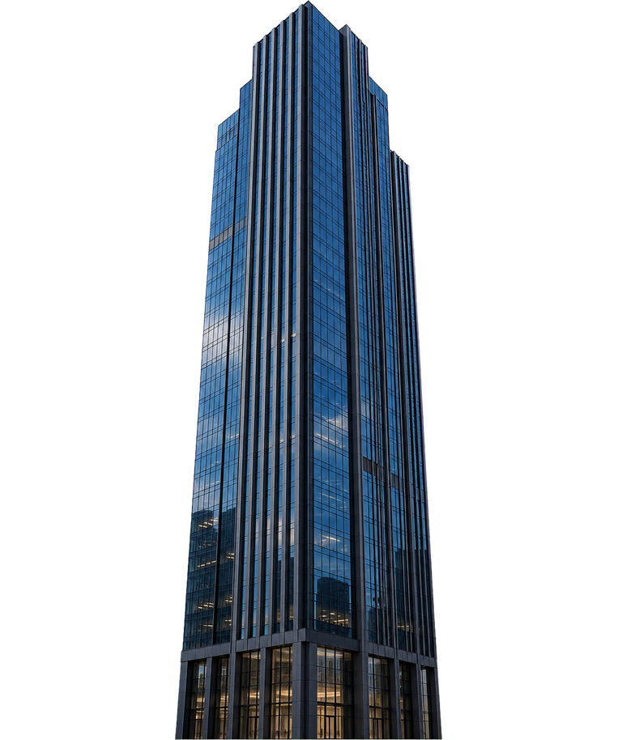
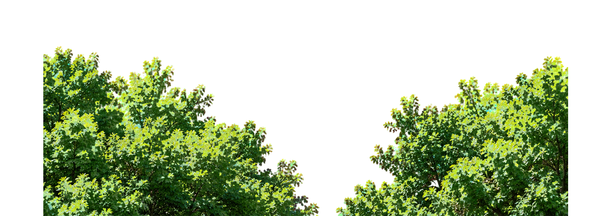

한국어 선택
한국어 선택 


첫 화면 이미지
진행자 이도윤과 함께하는
열 편의 생활 다큐 온담길 구강건강 기록
편하게 씹고 식사하는 평범한 하루를 돕습니다
어르신 임플란트 진료,
강남구 온담길치과를 찾는 까닭
일상 기록 온담길 구강건강 기록
김도현 원장이 참여한 지역 구강건강 기록
기록 영상 보기
구강건강 기록 참여자
어르신 건강 상태에 맞춘
임플란트 진료 과정
온담길치과는 중장년층의 잇몸과 남은 치아를 검사한 뒤 필요한 임플란트 계획을 설명합니다.
어르신 임플란트
진료 이야기
온담길치과는 중장년층의 잇몸과 남은 치아를 검사한 뒤 필요한 임플란트 계획을 설명합니다.
※ 모든 진료는 개인에 따라 경과와 부작용이 다를 수 있습니다.
함께 살피는 의료진
필요한 진료를 잇는 협력
어르신 진료 경험을 꾸준히 쌓은
온담길치과의 협력 진료팀
강남 온담길치과
임상 교육센터
강남구 온담길치과에서는
여러 지역의 치과 의료진과 증례 토론 및
소규모 임상 교육 과정을 운영합니다.
중장년층 임플란트 상담을 진행하는 온담길치과
오랫동안 임플란트 진료를 이어 온
온담길치과의 진료 및 교육 소식을 전해드립니다.
-
2004
진료 시작
-
2011
임플란트 상담과 정기관리 공간을 한 층으로 확장
-
2012
환자 안내 우수 운영 기록
-
2013
두 번째 진료 공간 운영
-
2018
상담과 관리 공간을 같은 층으로 확장
-
2019
성실 운영 감사 기록
-
2021
보철 관리용 저자극 치약 구성
-
2022
디지털 검사·기공실 마련
-
2023
지역 구강건강 협력 체결
이동이 편한 진료 공간 확장
-
2025
어르신 구강관리 안내 프로그램 운영 시작




온담길치과강남구 온담길 · 민트클빌딩 5층
CLINIC INFORMATION
-
전화 문의010-4894-4905
진료 흐름을 교육받은 상담 담당자가 문의 내용을 차분히 듣겠습니다.
-
카카오톡 문의 채널
-
진료 가능 시간
-
월요일 - 금요일
09 : 30 - 18 : 30
-
토요일 진료
09 : 30 - 16 : 30
-